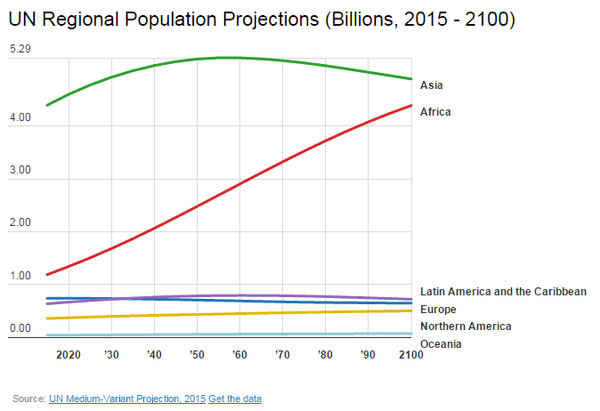

Michael is the author of Staying Married in a Degenerate Age. Follow him on Twitter or Facebook. You can read more of his writing at Honor and Daring.


Today, British citizens will vote on Brexit—whether the UK should remain or leave the European Union. The debate leading up to the vote contains valuable insights into the tactics of the globalists. It also demonstrates that the globalists can make mistakes. These are valuable pieces of knowledge for men who are committed to building a healthy society.
Konrad Adenauer
The idea of European Union (EU) came about after the horror of World War II. Christian men such as Konrad Adenauer, Robert Schuman and Winston Churchill dreamt of a Europe at peace, united by its Christian faith and common ancestral heritage. The EU started off as merely a free trade zone—the European Economic Community. The EU itself came into being in 1993 when the Maastricht Treaty became operative. The treaty created something like a “United States of Europe” with the concept of European citizenship.
Huge mob of 300 migrants storm port in Calais in violent bid to smuggle their way into UK https://t.co/zgpQUuknSh
— Louise Mensch (@LouiseMensch) June 21, 2016
Ironically, becoming the United States of Europe is the biggest problem of the EU. Just as the original 13 American colonies gave up their individual sovereignty to form the United States, each EU country will gradually have to give up its sovereignty.
What makes it worse is that they will yield their sovereignty to an undemocratic institution. While the EU does have an elected Parliament, it is a sham intended to make the EU look like a democratic body. The real power resides in the EU Commission, a body of 28 unelected bureaucrats. The individual member countries do have an opportunity to vote against EU Commission proposals, but unless a majority of the 28 member states also oppose the proposal, it becomes EU law. In other words, the EU can dictate not just trade between EU countries, but also what goes on within those countries.
In no area is this more evident that when it comes to immigration policy. For example, the EU member countries are currently negotiating a deal where Turkey will temporarily prevent a certain number of “refugees” from entering Europe in exchange for granting Turkey 1,500,000 visas. While Turks are probably preferable to some of the other “refugees” it would still mark a big step toward the Islamization of the UK.
Love it @BrookesTimes.#VoteLeave pic.twitter.com/XJzGjdEHXG
— Peter Thompson (@TheRedRag) June 10, 2016
Most of the benefits of being a member of the EU are economic. Being a member of the EU means that you don’t need to negotiate separate trade deals with 27 other countries. It also means that the EU can negotiate better trade deals with other countries such as the United States. Being part of the EU means you have more leverage when it comes to trade.
The natural fear is that if the UK leaves the EU, the other nations will impose tariffs on it. That’s an unlikely scenario as the UK is the second largest economy in the Europe and could easily retaliate by imposing tariffs of its own. Still, it is a rational argument.
But the “Remain” side of the debate has not been making rational arguments. Make-up wearing “comedian” Eddie Izzard implied that World War III awaits if UK leaves the EU.
ICYMI: “Saw some poppies in Nottingham. We set up the European Union to stop world wars ever happening again. Lest … https://t.co/q15qX8pwp6
— Eddie Izzard (@eddieizzard) June 11, 2016
The Labour Party suggested that leaving the EU could cause workers to lose their vacation.
If we leave EU, our hard-fought workers’ rights will be in the hands of the Tories. We can’t let that happen. RT → pic.twitter.com/BOByc01icA
— The Labour Party (@UKLabour) June 10, 2016
The Chancellor of the Exchequer was busy tweeting German threats:
Major intervention from Germany: UK would have to accept free movement and pay in to EU to continue to access trade https://t.co/jIAPPXM6hT
— George Osborne (@George_Osborne) June 10, 2016
The Guardian stated that the voting to “Leave” would make the UK the world’s most hated nation.
Just when you thought #ProjectFear had run out of ideas KA-POW https://t.co/Y9AVDRVr2C
— PoliticsSense (@PoliticsSense) June 20, 2016
And our old friend, arch globalist George Soros wrote an opinion piece claiming that Britons would see their living standards crater.


It is important to know about the EU and Brexit even if you are not a British citizen. First, it demonstrates how trade treaties can serve as a precursor to taking away a country’s sovereignty. The EU started as a trade agreement but it has now reached the point where EU trumps the laws of the individual nation.
The United States faces a similar challenge as globalists use NAFTA as a starting point to turn Canada, the United States, and Mexico into one “North American Community.” The massive influx of illegal immigrants into the US, aided by both Central American governments and the US, is the tip of the spear to achieve a single North American state.
Second, it gives a glimpse into how our elites control us by fear. Fear is the primary tool in the arsenal of elite control techniques. Sometimes these take the form of threats against our physical safety—as when the Muslim mayor of London threatened the US with Islamic terror attacks if Trump imposes a ban on Muslim immigration.
Third, it shows the growing use of the tactic of calling anyone who stands in the way of the globalist agenda a ‘racist’ or ‘far right wing.’ In this way, anyone who wants to vote in his self interest is automatically branded as being an extremist, worse than any actual terrorist. This is by design. It lays the groundwork for police action against these “dangerous” elements in society.
The final lesson of Brexit is that there is still some small possibility of democratic change. It is a miracle—or a big miscalculation—that the globalist elite have allowed the UK to have a referendum on whether to leave the EU. It would be a stunning blow to the globalist agenda if the UK leaves the EU as it opens the door to a healthy nationalist government.
This means that the globalist lock on power is not yet complete. Now is the time to do everything in our power to wrest control from them.

One thing is certain: This is the last time that Britons will have a chance to vote to leave the EU in a generation. If the UK votes to remain, the future will look less English, Scottish, and Irish and more African and Islamic. That’s not scare mongering. That’s an inevitable consequence of how demographics are shaping up in the third world. The destiny of any nation that fails to control its own borders is to get inundated by that rising wave.
Read More: Brexit Vote: Why Britain Should Leave The European Union